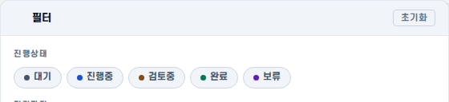
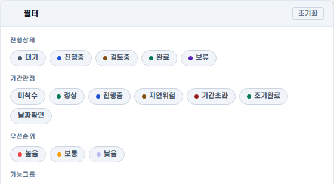
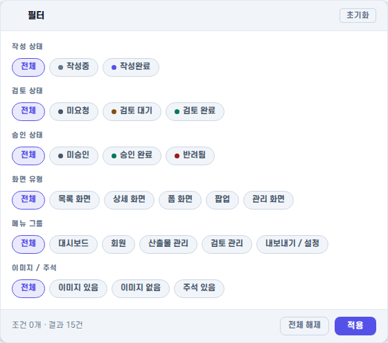
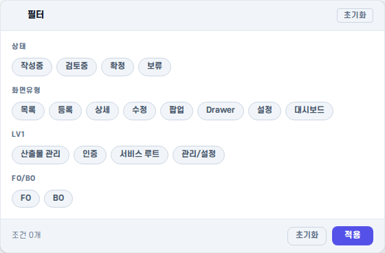
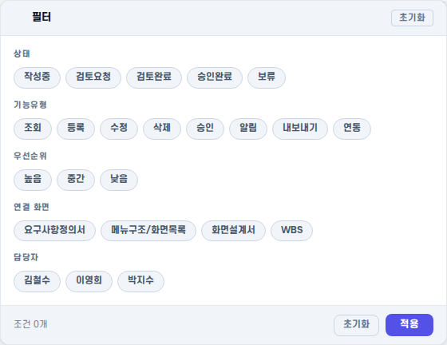
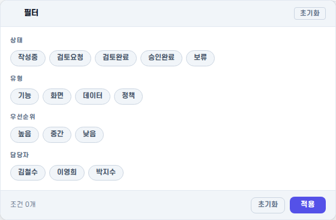

Artifact 경로
| 구분 | 경로 | 비고 |
|---|---|---|
| QA HTML 리포트 | .qa/pr127/index.html | 이 파일 |
| 1366px 스크린샷 | .qa/pr127/1366/*.png | 5개 화면 |
| 1920px 스크린샷 | .qa/pr127/1920/*.png | 5개 화면 |
| 공통 CSS | stam/css/stam.board-filter.css | dot 클래스 3종 추가 |
| 공통 JS | stam/js/stam.board-filter.js | radio 모드 · onChange · onReset 추가 |
| 공통 DOM 생성 함수 | STAM.boardFilter.init() | 5개 화면 모두 호출 |
SSOT 증거 PASS
5
화면 모두
STAM.boardFilter.init() 호출WBS · 화면정의서 · 메뉴-화면목록 · 기능명세서 · 요구사항
113
런타임 chip 수 (
data-sbf-group 보유)Playwright 실행 후 DOM 검사 기준. 정적 선언 시 이 속성은 존재 불가.
0
구형
data-val 정적 chip (legacy)5개 HTML 파일 정적 분석 결과. 모든 chip이 JS 렌더러에 의해 생성됨.
0
화면 전용 필터 함수 잔존
구
initFilterPanel()(wbs) · initFilter() 등 6개 함수 모두 제거됨.코드 변경 요약
| 파일 | 유형 | 제거 | 추가 |
|---|---|---|---|
stam/js/stam.board-filter.js |
공통 JS | — | type:'radio' 그룹 모드, onChange/onReset 콜백, data-sbf-radio 렌더링, 전체(value='') chip 배지 제외 |
stam/css/stam.board-filter.css |
공통 CSS | — | dot 클래스 3종: .d-write .d-brand .d-fatal |
stam/js/stam.wbs.js |
화면 JS | initFilterPanel() (~880자, 구 wbs-fp-chip dead code) |
STAM.boardFilter.init() 호출 |
stam/pages/boards/screen-specification.html |
화면 HTML | 정적 filter DOM: sbf-head + 6 sbf-sec + 27 chip + sbf-foot-info | 마운트 포인트만 존재 (#ss-fpop) |
stam/js/stam.screen-specification.js |
화면 JS | 6개 함수: initFilter() toggleFilter() closeFilter() updateFilterBtn() resetFilter() applyFilter() |
STAM.boardFilter.init() 호출 (radio 6그룹) |
stam/css/stam.screen-specification.css |
화면 CSS | 구 .ss-filter-btn .ss-filter-pop .ss-fopt 전용 CSS |
공통 클래스 위임 주석만 잔존 |
금지 파일(stam.nav-data.js · stam.shell.js · stam.topbar.js · Firebase · DB/API 등)은 이 PR에서 수정되지 않았습니다.
필터 패널 오픈 상태 스크린샷
1366px viewport
WBS

화면정의서 (screen-specification)
메뉴-화면목록 (menu-screen-list)
기능명세서 (functional-specification)
요구사항 (requirements)
1920px viewport
WBS

화면정의서 (screen-specification)

메뉴-화면목록 (menu-screen-list)

기능명세서 (functional-specification)

요구사항 (requirements)

커밋 목록
| 커밋 | 내용 |
|---|---|
2283de1 | refactor(ui): promote wbs filter to common component |
267e04f | refactor(ui): convert all 5 screens to STAM.boardFilter.init() SSOT |
9436f5e | chore(qa): add pr127 filter panel screenshots (5 screens × 2 viewports) |